q-functions¶
q-Pochhammer symbol¶
qp()¶
- mpmath.qp(a, q=None, n=None, **kwargs)¶
Evaluates the q-Pochhammer symbol (or q-rising factorial)
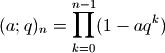
where
 is permitted if 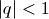. Called with two arguments,
qp(a,q) computes 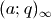; with a single argument, qp(q)
computes 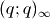. The special case
is permitted if 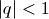. Called with two arguments,
qp(a,q) computes 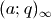; with a single argument, qp(q)
computes 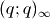. The special case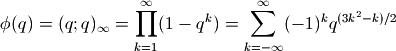
is also known as the Euler function, or (up to a factor 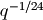) the Dirichlet eta function.
Examples
If
 is a positive integer, the function amounts to a finite product:
is a positive integer, the function amounts to a finite product:>>> from mpmath import * >>> mp.dps = 25; mp.pretty = True >>> qp(2,3,5) -725305.0 >>> fprod(1-2*3**k for k in range(5)) -725305.0 >>> qp(2,3,0) 1.0
Complex arguments are allowed:
>>> qp(2-1j, 0.75j) (0.4628842231660149089976379 + 4.481821753552703090628793j)
The regular Pochhammer symbol 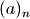 is obtained in the following limit as 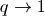:
>>> a, n = 4, 7 >>> limit(lambda q: qp(q**a,q,n) / (1-q)**n, 1) 604800.0 >>> rf(a,n) 604800.0
The Taylor series of the reciprocal Euler function gives the partition function 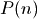, i.e. the number of ways of writing
as a sum of positive integers:>>> taylor(lambda q: 1/qp(q), 0, 10) [1.0, 1.0, 2.0, 3.0, 5.0, 7.0, 11.0, 15.0, 22.0, 30.0, 42.0]
Special values include:
>>> qp(0) 1.0 >>> findroot(diffun(qp), -0.4) # location of maximum -0.4112484791779547734440257 >>> qp(_) 1.228348867038575112586878
The q-Pochhammer symbol is related to the Jacobi theta functions. For example, the following identity holds:
>>> q = mpf(0.5) # arbitrary >>> qp(q) 0.2887880950866024212788997 >>> root(3,-2)*root(q,-24)*jtheta(2,pi/6,root(q,6)) 0.2887880950866024212788997
q-gamma and factorial¶
qgamma()¶
- mpmath.qgamma(z, q, **kwargs)¶
Evaluates the q-gamma function
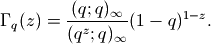
Examples
Evaluation for real and complex arguments:
>>> from mpmath import * >>> mp.dps = 25; mp.pretty = True >>> qgamma(4,0.75) 4.046875 >>> qgamma(6,6) 121226245.0 >>> qgamma(3+4j, 0.5j) (0.1663082382255199834630088 + 0.01952474576025952984418217j)
The q-gamma function satisfies a functional equation similar to that of the ordinary gamma function:
>>> q = mpf(0.25) >>> z = mpf(2.5) >>> qgamma(z+1,q) 1.428277424823760954685912 >>> (1-q**z)/(1-q)*qgamma(z,q) 1.428277424823760954685912
qfac()¶
- mpmath.qfac(z, q, **kwargs)¶
Evaluates the q-factorial,
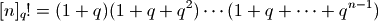
or more generally
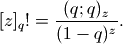
Examples
>>> from mpmath import * >>> mp.dps = 25; mp.pretty = True >>> qfac(0,0) 1.0 >>> qfac(4,3) 2080.0 >>> qfac(5,6) 121226245.0 >>> qfac(1+1j, 2+1j) (0.4370556551322672478613695 + 0.2609739839216039203708921j)
Hypergeometric q-series¶
qhyper()¶
- mpmath.qhyper(a_s, b_s, q, z, **kwargs)¶
Evaluates the basic hypergeometric series or hypergeometric q-series
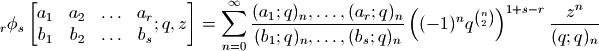
where 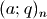 denotes the q-Pochhammer symbol (see qp()).
Examples
Evaluation works for real and complex arguments:
>>> from mpmath import * >>> mp.dps = 25; mp.pretty = True >>> qhyper([0.5], [2.25], 0.25, 4) -0.1975849091263356009534385 >>> qhyper([0.5], [2.25], 0.25-0.25j, 4) (2.806330244925716649839237 + 3.568997623337943121769938j) >>> qhyper([1+j], [2,3+0.5j], 0.25, 3+4j) (9.112885171773400017270226 - 1.272756997166375050700388j)
Comparing with a summation of the defining series, using nsum():
>>> b, q, z = 3, 0.25, 0.5 >>> qhyper([], [b], q, z) 0.6221136748254495583228324 >>> nsum(lambda n: z**n / qp(q,q,n)/qp(b,q,n) * q**(n*(n-1)), [0,inf]) 0.6221136748254495583228324